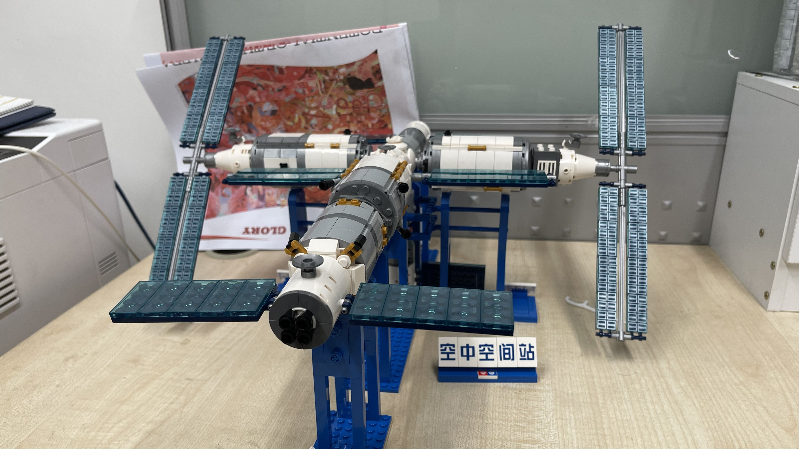

「新玩意」合集——第 1 期？
之前有篇「新玩意」，打算投给少数派的，结果没成，今天突发奇想，干脆搬上来吧，也算是给网站添点热乎气。
新玩意｜公牛 65W PD 快充插座
- 入手渠道：京东自购
- 入手价格：¥154（¥159 - ¥5），7/1–7/31 京东只要 ¥144
之前用公牛自带收纳盒的插座，结果遇到了几个问题。首先是开关莫名其妙卡住了，位置也扭曲了，导致插排彻底关不上了。其次是去年年中购入了港版 Switch，自带收纳盒的高度不够高，装不下 Switch 插头加转换器，使得盖子形同虚设。第三是孔位不够富裕，虽然有专门插 MacBook Pro 大砖头的侧面孔位，但刨去三个 USB 口，就只有五个五头插座，笔记本、显示器、Switch、PS5 插满后就只剩一个口机动，如果插头形制特殊，甚至连这最后一个孔也没了（之前接宜家的三充电位无线充电器就是这情况）。
年初的时候换了 M1 MacBook Air，事实上已经不需要 87W 的充电功率了。不用纠结「大白砖头」，可供选择的插排也一下多了起来。后来偶然看到公牛出了这款带 65W PD 充电口的插排，孔位有比较合理，就直接下单了。当然，下单之前我也规划了一下各个插口的布置，大致如下：
当然，这都是理想化的布局。受制于个别插头的体积（说的就是港版 Switch 加转换器那个巨大无比的插头），实际布局做了微调如下：
换这个插排的好处显而易见：由于 MacBook 充电不再占用一个插座，后备插座的数量增加了，能更好地应对弹性需求。由于我个人同时需要接电的设备终归是有限的，这个配置在相当长一段时间里应该都够用，哪怕换了电动升降桌，也有富余。
要说缺点的话，其实就一条：除了 65W 充电口之外，两个 USB-A 口充电时会有延迟（接入手机等设备会隔个几秒才开始充电）或波动（接入设备后充电时断时续，有时甚至不充电）等情况，但随着日常使用，完全充不进去电的情况倒也并没有发生。
还有一个对我个人而言算不上缺点，但有些读者可能会介意的地方：两个 USB-A 口，单口输出最大 18W；同时输出，两 USB-A 口相加最大只有 15W；如果是 A + C，则为 18W + 45W；如果三口同时输出，C + (A + A) 的功率为 45W + 15W。我个人对快充没有需求，MacBook Air 的话 45W 也完全足以喂满。所以如果对输出功率比较介意，建议慎重购买。
为方便理解，输出功率组合情况见下表：
| + 0 | + USB-C | + USB-A1/A2 | + USB-A1 + USB-A2 | |
|---|---|---|---|---|
| USB-C | 65W | - | 45W | 45W |
| USB-A1 | 18W | 18W | 共享 15W | - |
| USB-A2 | 18W | 18W | 共享 15W | - |
新玩意｜中国空间站积木套装
- 入手渠道：淘宝自购（bilibili 旗舰店）
- 入手价格：¥331.59（¥395 - ¥63.41）
本来我就喜欢乐高类玩具。我国的空间站升空之后，我迷上了国产的航天主题砖。这类砖有不少厂家在出，比如 Keeppley、森宝、维思（也就是奥迪双钻）。偶然发现这款维思的空间站全套在 Bilibili 预售，就在 6 月 17 号下了单，辗转快两个月，终于在 8 月 13 号拿到了。
这个空间站套装，自然是以正在建设的中国空间站为原型，包含已经在轨运行的天和核心舱、天舟二号货运飞船、神舟十二号载人飞船，以及即将升空的梦天、问天两个实验舱，分装五个盒子，总共将近 1,500 块砖，砖均单价不到两毛五，属于国产砖的正常价格区间。每盒大概四五包零件，并不是按照步骤分装的，需要先混起来再找件，所幸每盒件数都不多，不到 300，还算比较好找。但分装也有些欠考虑的地方：五盒砖只有第一盒（核心舱）给拆件器，只有第五盒（载人飞船）给总装的步骤，不知道厂家在设计之初，是不是就认定消费者一定会买全套；但既然一定买全套，又何苦分成五盒呢？拼装过程中，我也毫不意外地遇到了多件、错件的情况：比如三缺一的「梦天实验舱」，还有不得已而改名的「空中空间站」（因为有两个「空」）。
砖的质量整体还可以，就是珍珠色件比较糟糕，注塑痕迹极为明显。砖与砖组合的手感尚可，但有部分砖很紧，非常紧，紧到装的时候我都不知道怎么拆开。例如板件，居然还是等长、对齐、压死，为了组装严密，一点缝都不能留，组装的时候我就想「千万可别返工」，结果果不其然，部件方向搞混了，非拆到底不可，着实折磨。但愿国产砖以后能在设计合理性上再多下点功夫。
五盒玩具自然就有五本说明书。说明书纸质尚可，但模型清晰度不是特别高，就好像没开抗锯齿一样，稍有毛刺。有的件颜色与说明书不符，需要自行发挥一下。还有的示意图把乐高时有发生的阴间配色都学来了，简直看瞎我狗眼。

受限于比例尺，这套积木注定只能是「螺蛳壳里做道场」。但即便如此，厂家依然尽力做出了差异化和识别度。梦天、问天两个实验舱虽然件数一致，但仍在末端的「方 + 锥」和「圆 + 锥」上做出了区别，值得表扬。各个舱段的外形也极具辨识度，熟悉航天的读者估计一眼就能靠大体外形分出来载人飞船和货运飞船；不了解的也能通过这套积木学习一下这两个舱段的轮廓。至于天和核心舱标志性的机械臂，也做出来了，虽然不似本尊那么神通广大，但也能和乐高的 21321 掰掰手腕。
说到 21321（也就是乐高的国际空间站套装），我在拼我国空间站之前，先「试拼」了一下这套乐高的「假想敌」。由于航天师承不同，国际空间站和我国的空间站外形、结构都差别极大，拼起来完全是两种体验。但也能看出，相比之前拼过的其他国产航天积木，这套空间站明显有不少师自 21321 的地方。例如长帆板的设计，和乐高一样，用两根十字轴做主干，一侧一根，主体结构一体成型，自然稳定性、造型都更佳。而且相比 21321 的设计，我反而觉得这套国产空间站更胜一筹。21321 的不容易找对称、对齐，有点逼死强迫症那意思了。但欲戴王冠，必承其重。使用超长杆部件做主体结构，对十字轴的质量是一大考验。国产十字轴的质量还不是特别好，上手甚至就觉得有点软，使得实验舱的帆板多少有点向两侧下坠，影响美观。
总的来说，这套积木还是非常适合航天爱好者入手的。整个东西拼起来可能占地面积确实有点夸张，但也的确气势恢弘。如果家里没有足够大的地方摆开这一摊（是的，「摊」），也可以不总装，而是化整为零，自由组合。我自己组装、欣赏这套积木的时候，就回想起自己像追剧一样，密切关注空间站发射每一场直播和转播，那种激动的心情，的确无以言表。今年的空间站发射，无异于给陷在「抄袭」这个泥淖里的国产积木猛推了一把，大有翻身之势。希望这个势头能维持下去。也顺祝我国航天事业一切顺利！

新玩意｜HyperJuice 66W 氮化镓充电器
- 入手渠道：淘宝自购
- 入手价格：¥223.5（9.9 ¥338 - ¥114.5）
陪伴了我一年的 Zendure 充电器，最近一直充电断断续续，终于随着一声电容爆炸，寿终正寝了。买这个充电器的时候，我还在用 15 寸 MacBook Pro（2016 年末），必须得整一个 87W 或以上的充电口，Anker 那个大白砖碰巧没货，就选了 Zendure 的这个。这东西陪我出了无数趟差，不出差的时候就在办公桌上继续服役。如今一报废，我还真有点无所适从。原想再买一个，但听说 Zendure 后来用料不好，就看上了 新玩意 075｜少数派的编辑们最近买了啥？ 里提到的 HyperJuice Stackable GaN 100W 充电头，奈何国内不好买，又想了想现役的 MacBook Air 也用不着这么高的功率，就选了同属 HyperJuice 的 66W 氮化镓充电器。
物流很迅速，隔天就到了，盒子的确小巧，打开的方式也很独特，像是张开的手风琴。掀开盖子，顶层躺着的就是充电器本尊了。不得不说， 这充电器是真的小，和 Zendure 充电器的「尸体」一比就体现得更淋漓尽致了。
充电器是 2C1A 的配置，其中两个 USB-C 口均支持最大 65W 的功率，USB-A 口最大 36W。看到这里你可能会问：「说好的 66W 呢？」其实 66W 是 C + C + A 混合输出的最大功率（30W + 18W + 18W）。具体的充电组合功率我也做成了表格，供大家参考。
| + 0 | + USB-C | + USB-A | + USB-C + USB-A | + USB-C + USB-C | |
|---|---|---|---|---|---|
| USB-C1 | 65W max | 30W | 45W | 30W | - |
| USB-C2 | 65W max | 30W | 45W | 18W | - |
| USB-A | 36W max | 18W | - | - | 18W |
取下充电头下方的托盘，就会发现下面还随附三个旅行转换插，分别对应欧标、英标和澳标。安装方式也很直接：插头折叠的状态下，把两脚插和工字槽分别对准，往里一推就完事了。以后出差终于也能免去带转换插头的麻烦了。
不得不说，自从买了 M1 MacBook Air，用不着非得找 100W 的充电口，消费降级也变得简单了呢（
欢迎将您的想法、评论、意见、建议发送至 harveyjanson@icloud.com，请注明「讨论」字样，我会尽量回复。